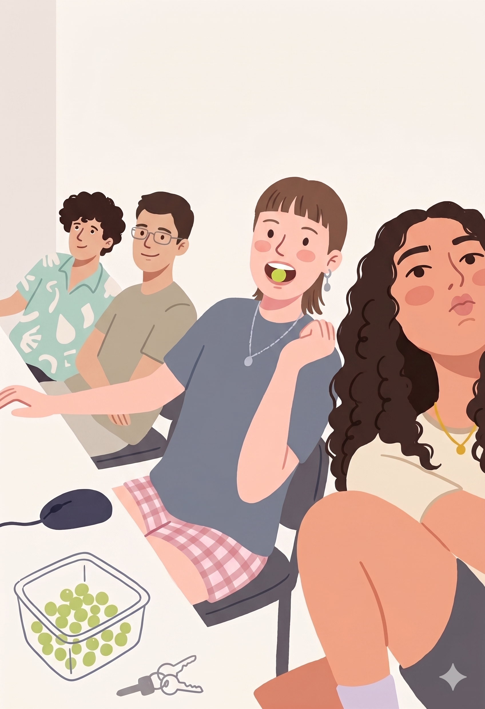

אודות הפרויקט
פרויקט "אמא, למה?" נולד מתוך צורך עמוק של הורים רבים להתמודד עם הרגעים
המפתיעים ביותר ביום – רגעי השאלות הקשות.
ילדים סקרנים מטבעם, וטוב שכך. הם שואלים על מוות, על גירושין, על שונות חברתית, על גוף האדם,
ועל שאלות קיומיות אחרות.
לפעמים, השאלות הללו מוצאות אותנו לא מוכנים, מעוררות מבוכה או חשש רגשי.
החזון שלנו הוא להעניק להורים את הידע ואת הכלים הפרקטיים הממוקדים ביותר, כדי שיוכלו להפוך כל
שאלת "למה" להזדמנות נפלאה לקרבה, אינטימיות וחיזוק תחושת הביטחון של הילד.
אנו מאמינים בתקשורת כנה, פשוטה ובגובה העיניים. חוק 3 השכבות, שפותח במסגרת הפרויקט, מסייע למנוע מבוכה והצפת מידע, ומעניק לילד בדיוק את המענה לו הוא זקוק: עובדות פשוטות, תיקוף רגשי, ויציבות קיומית.
כל התשובות, הכלים והמתודולוגיות באתר (כולל חוק 3 השכבות) מבוססים על תיאוריות פסיכולוגיות מובילות בתחום התפתחות הילד, תקשורת מקרבת והדרכת הורים, ונכתבו בשיתוף פעולה עם פסיכולוגים חינוכיים ומומחים לגיל הרך.
האתר נבנה על ידי – קרן רותם, יעל אבנר, אירית פישמן ויונתן שניידר,
במסגרת קורס פיתוח אתרי אינטרנט (תשפ״ו, 13304) במכון הטכנולוגי חולון (HIT).
